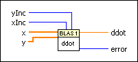
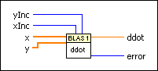

ddot - Dot Product (DBL) VI
Owning Palette: Basic Linear Algebra Subroutines VIs
Requires: Full Development System
Calculates the dot product of two real vectors.

 Add to the block diagram Add to the block diagram |
 Find on the palette Find on the palette |
Owning Palette: Basic Linear Algebra Subroutines VIs
Requires: Full Development System
Calculates the dot product of two real vectors.

| Add to the block diagram |
Find on the palette |
 |
yInc determines whether the VI skips elements in y for the calculation. The default is 1, meaning the VI does not skip any elements in y. yInc is an optional input.
|
||
|
xInc determines whether the VI skips elements in x for the calculation. The default is 1, meaning the VI does not skip any elements in x. xInc is an optional input.
|
||
 |
x is a real vector. | ||
|
y is a real vector. y must be the same size as x. | ||
 |
ddot is a real scalar that returns the dot product of x and y. | ||
 |
error returns any error or warning from the VI. You can wire error to the Error Cluster From Error Code VI to convert the error code or warning into an error cluster. |
Refer to the BLAS (Basic Linear Algebra Subprograms) website at netlib.org for more information on BLAS functions.
Refer to the Comparison of BLAS and linear algebra VIs VI in the labview\examples\Mathematics\Linear Algebra directory for an example of using the ddot - Dot Product (DBL) VI.
 Open example Find related examples
Open example Find related examples